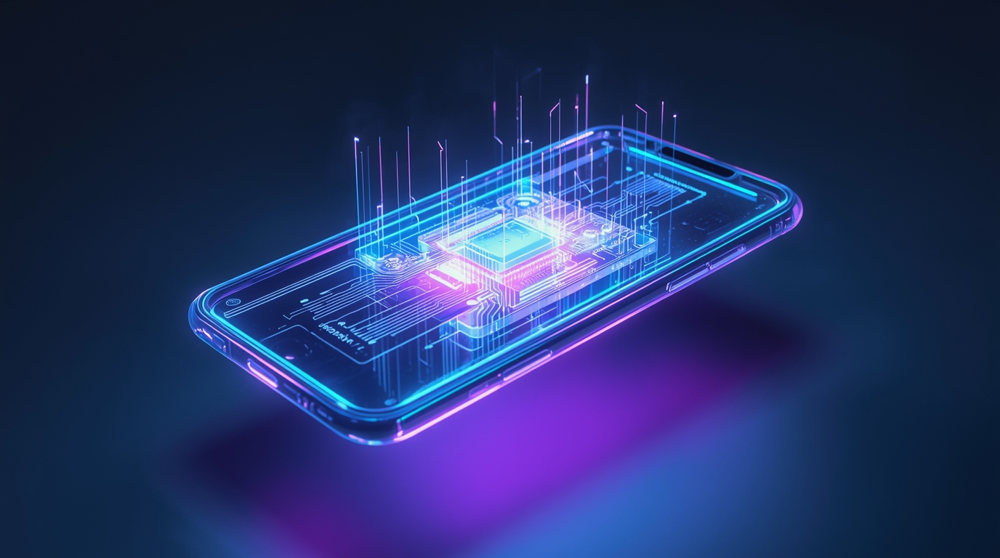
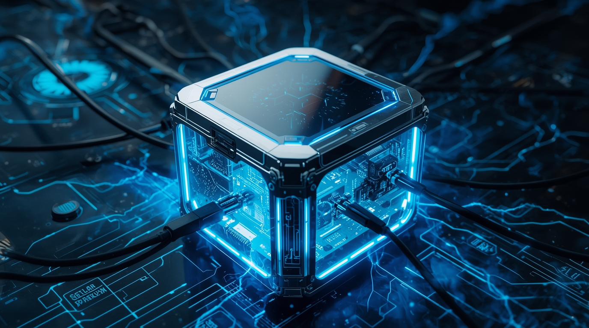
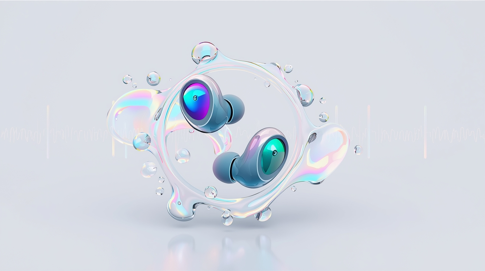
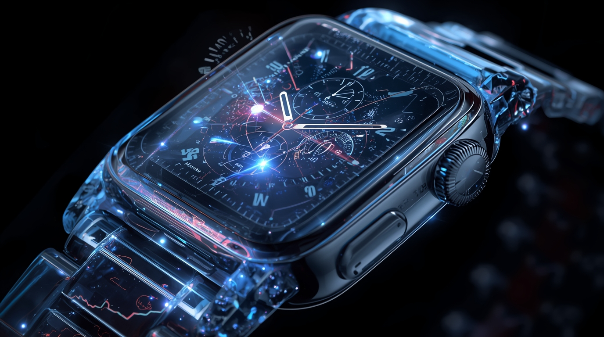

Dispositivo holográfico quântico com interface neural 3D. Projeção volumétrica e processamento quântico integrado.
Explorar Dimensões
Cubo gamer com interface neural direta. Experiência imersiva através de conexão sináptica e realidade quântica.
Conectar Mente
Pods neurais bio-adaptativos que flutuam no ar. Sincronização cerebral e cancelamento quântico de ruído.
Sincronizar Ondas
Relógio bio-integrado com manipulação temporal. Monitoramento quântico vital e portais dimensionais.
Viajar no Tempo